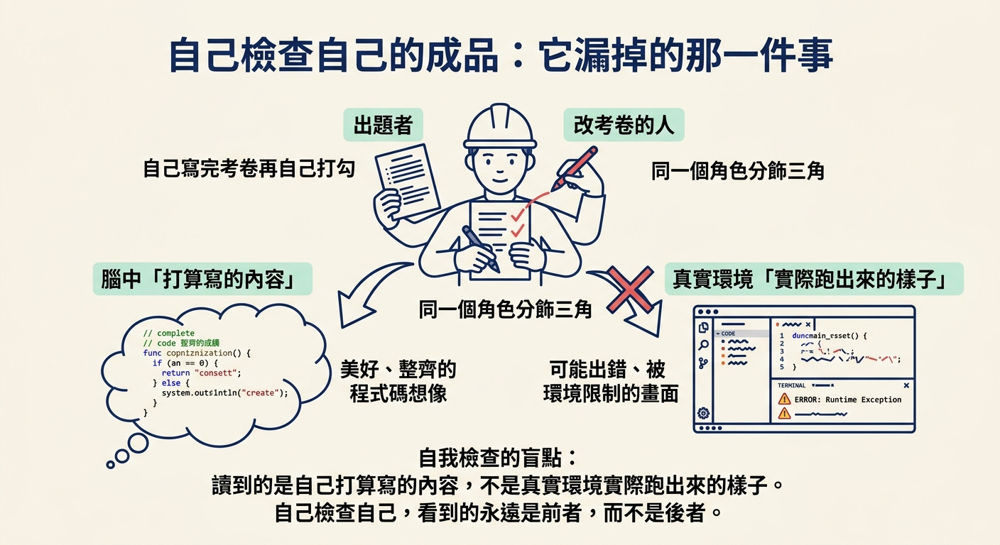
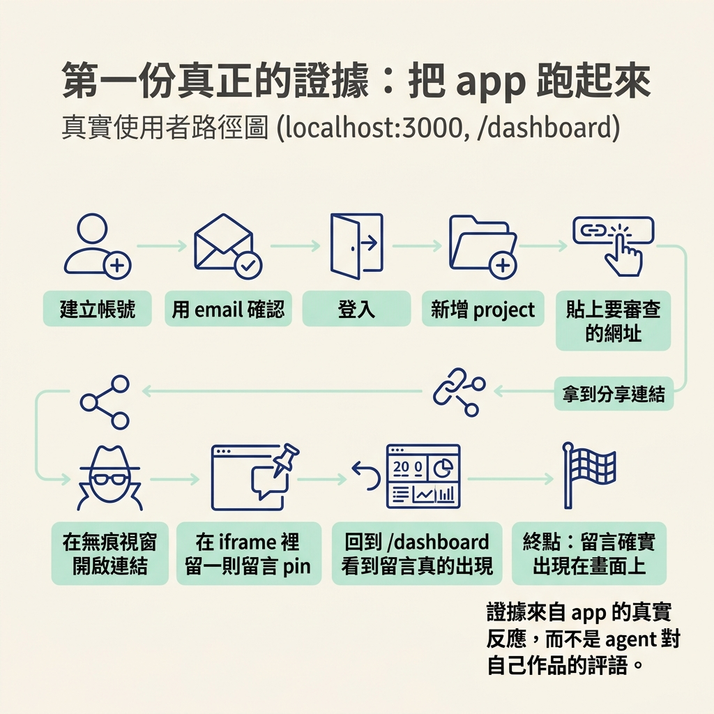
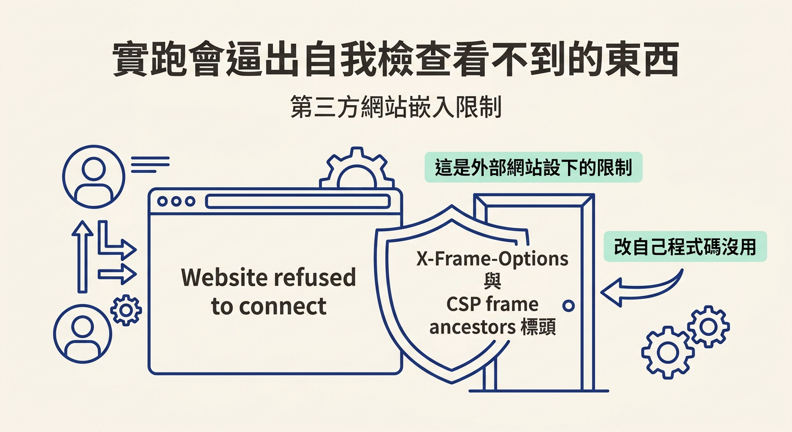

說出「prototype, done」實際上完成了什麼、又漏掉了什麼，並解釋為什麼把 app 真的跑起來看它動，才是第一份真正的證據。
先想像一個很常見的畫面。你請 agent 把「留言 pin」這個功能做出來，過了一陣子它回報完成，還附上一段說明：「我已經檢查過自己的實作，測試也通過了。」聽起來很完整，於是你接著往下推，去開下一個功能。
但你心裡有沒有冒出一個小小的問號：它說的「完成」，到底是誰認可的？是它自己，還是你真的打開 app、點過那個按鈕、看過那則留言有沒有出現？
上一段你把 scope → architect → develop 的循環跑了好幾輪，把專案從資料模型一路建到留言功能。在那段過程裡，「做完」的定義一直是 prototype, done——功能建出來，然後 agent 自己檢查自己的成品。這一節要把這個門檻往上抬一階：做完不等於被證明。而在討論「怎麼證明」之前，得先看清楚原本那個「done」到底少算了什麼。
先講它做對的部分。這個階段確實有產出：功能被建出來了，而且 agent 也真的回頭看過一遍。課程對它的定義說得很清楚：
Add prototype, done, meant the agent built the feature and checked its own work.
所以 prototype 對到的是「建好，並且自己檢查過」。這不是空話——agent 會讀它自己寫的程式、跑它自己寫的檢查，確認語法沒問題、邏輯大致接得起來。以「先把東西做出來」為目標，這樣做很合理。
問題出在「自己檢查自己的成品」這幾個字。負責蓋的人，同時也是負責驗收的人；出題的、作答的、改考卷的都是同一個角色。這就像學生寫完考卷後自己打勾，他可以檢查得很認真，但有一個盲點很難靠自己克服：他讀到的是自己打算寫的內容，不是它在真實環境裡實際跑出來的樣子。

換句話說，自我檢查回答的是「這段程式碼看起來對不對」，而不是「這個功能在使用者手上到底會不會動」。這兩件事在 demo 裡經常長得很像，實際上卻是兩份不同的證明。而要把後者補上，方法其實很單純——把 app 真的開起來。
課程的做法很直接。要看到真實行為，第一件事是把應用程式跑起來，而且該給的環境變數一個都不能少：
I ran the application, gave it all the ENVs, and back on localhost 3000.
跑起來之後，app 就掛在本機的 localhost:3000，儀表板在 /dashboard。這兩個位址就是接下來驗收的入口：
http://localhost:3000 # 首頁 http://localhost:3000/dashboard # 儀表板，看留言
然後是關鍵的一步：不要只看它有沒有編譯成功，而是照著一個真實使用者的路徑，把功能從頭到尾走一遍。課程示範的流程大致是這樣：建一個帳號、用 email 確認、登入；新增一個 project；貼上要審查的網址；拿到一條可以給客戶的分享連結；開一個無痕視窗進到那條連結；在 iframe 裡瀏覽網站、留一則留言 pin；最後回到 /dashboard，確認那則留言真的出現在該出現的地方。
走完這條路徑，講師的評語只有一句——
That works.
（它就是會動。）
這就是第一份真正的證據。它證明的不是「程式碼寫得漂亮」，而是「承諾的行為，在跑起來的產品裡真的發生了」。這份證據來自 app 本身的反應，不是來自 agent 對自己作品的評價。

把 app 開起來還有一個附加效果：它會把那些只在真實環境才現形的限制挖出來。課程裡就撞到一個很典型的例子。當你把一個不屬於自己的網站貼進 iframe 想預覽時，畫面很可能直接跳出——
Website refused to connect.
（網站拒絕連線。）
這不是你的程式寫壞了。真正的原因在對方的回應標頭：
X-frame options, CSP frame ancestors, telling the browser to refuse the frame, and that's outside of our control for any site that we don't own.
網站用 X-Frame-Options 和 CSP frame ancestors 這兩個標頭，明確告訴瀏覽器「不要把我的頁面嵌進別人的框裡」。只要那個網站不是你自己的，你程式碼裡怎麼改都繞不過去。這種限制，光盯著自己的程式碼是看不出來的；只有真的把它跑起來、照著使用路徑走一遍，它才會自己跳出來。

把兩種情況並排看，差異就很清楚了：
| 自我檢查（self-check） | 實跑（run the app） | |
|---|---|---|
| 檢查的對象 | agent 自己寫的程式碼與檢查 | 跑起來的產品實際行為 |
| 誰在判斷 | 寫的人自己 | app 的真實反應 |
| 能證明什麼 | 程式碼看起來接得起來 | 承諾的行為真的發生 |
| 容易漏掉 | 真實環境的限制與使用路徑 | 需要先備妥環境變數與可跑的環境 |
到這裡要先停一下，因為「把 app 跑起來看它動」雖然是貨真價實的證據，但它只回答了一個問題：這個功能今天能不能跑。它證明的是此刻、這一次、這條路徑上，功能是活的。
它沒有回答另一個同樣重要的問題：以後程式繼續改，這個今天還會動的功能，會不會在某次改動裡被悄悄弄壞？這兩個問題需要兩種不同的證明，而它們各自的角色，就是下一步要拆開來看的重點。
「prototype, done」代表 agent 把功能建出來，並且檢查了自己的成品。它負責的是「看起來對不對」，不是「實際會不會動」。第一份真正的證據，是把 app 跑起來：備齊環境變數、開在localhost:3000、照著真實使用者的路徑走一遍，看承諾的行為有沒有在產品裡發生。實跑還會逼出自我檢查看不到的東西，例如第三方網站用X-Frame-Options／CSP frame ancestors拒絕被嵌入——這種限制光看自己的程式碼是找不到的。不過實跑只回答了「今天能不能跑」，還有另一個問題等著被回答。
既然「今天會動」不等於「以後還會動」，下一步就把證明拆成兩種：一個負責當場驗證，一個負責長期保護。我們先認識這兩個問題、兩種 skill，以及它們各自對應的 tier。